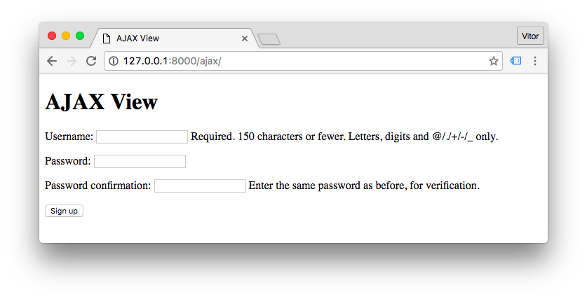
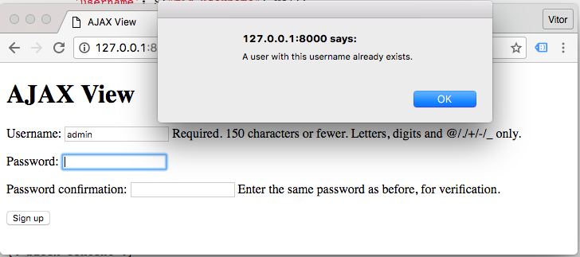

There are many scenarios where you may want to use AJAX requests in your web application. It is a great resource that enables web applications to be faster and more dynamic. For this short tutorial I will be using jQuery to ease the implementation.
You can choose a different framework, or even implement it using JavaScript only. But the concept will remain the same.
Initial Setup
Here is how my base.html template looks like:
{% load static %}<!doctype html>
<html>
<head>
<meta charset="utf-8">
<title>{% block title %}Default Title{% endblock %}</title>
<link rel="stylesheet" type="text/css" href="{% static 'css/app.css' %}">
{% block stylesheet %}{% endblock %}
</head>
<body>
<header>
...
</header>
<main>
{% block content %}
{% endblock %}
</main>
<footer>
...
</footer>
<script src="https://code.jquery.com/jquery-3.1.0.min.js"></script>
<script src="{% static 'js/app.js' %}"></script>
{% block javascript %}{% endblock %}
</body>
</html>The jQuery library and all the JavaScript resources stays in the end of the HTML page for two reasons: to guarantee the DOM will be loaded whe the script is executed and to avoid inline scripts (at least scripts that uses jQuery).
All the extra or page specific JavaScript goes inside the {% block javascript %}{% endblock %}
block.
Sample Scenario
Let’s say you want to validate the username field in a sign up view, as soon as the user finish typing the desired username. You want just to do a simple check, if the username is already taken or not.
views.py
from django.contrib.auth.forms import UserCreationForm
from django.views.generic.edit import CreateView
class SignUpView(CreateView):
template_name = 'core/signup.html'
form_class = UserCreationFormurls.py
from django.conf.urls import url
from core import views
urlpatterns = [
url(r'^signup/$', views.SignUpView.as_view(), name='signup'),
]signup.html
{% extends 'base.html' %}
{% block content %}
<form method="post">
{% csrf_token %}
{{ form.as_p }}
<button type="submit">Sign up</button>
</form>
{% endblock %}The view looks like that:

Ajax Request
Let’s implement an asynchronous request to validate if the username is already taken or not.
First we gotta have a look on the HTML generated by the {{ form.as_p }}. We want to inspect the
username field, which looks like that:
<input type="text" required="" name="username" maxlength="150" id="id_username" autofocus="">What we need here is its ID, which is id_username. Let’s create a listener for the username’s field change event:
signup.html
{% extends 'base.html' %}
{% block javascript %}
<script>
$("#id_username").change(function () {
console.log( $(this).val() );
});
</script>
{% endblock %}
{% block content %}
<form method="post">
{% csrf_token %}
{{ form.as_p }}
<button type="submit">Sign up</button>
</form>
{% endblock %}This is something I still like to do nowadays, even working with jQuery every single day. Before moving forward, make sure you got the listener right. Make sure the event is firing correctly. In this case, as the name suggests, the change event will occur every time the value of the username field changes.
You can check the output of the console.log() function in your web browser console. Generally right clicking in the
page and clicking on a menu that says Inspect or something similar.
Let’s create a view that checks if a given username is taken, and return a response as JSON.
views.py
from django.contrib.auth.models import User
from django.http import JsonResponse
def validate_username(request):
username = request.GET.get('username', None)
data = {
'is_taken': User.objects.filter(username__iexact=username).exists()
}
return JsonResponse(data)Add a route to this view:
urls.py
from django.conf.urls import url
from core import views
urlpatterns = [
url(r'^signup/$', views.SignUpView.as_view(), name='signup'),
url(r'^ajax/validate_username/$', views.validate_username, name='validate_username'),
]And then the simpliest implementation would be:
signup.html
{% extends 'base.html' %}
{% block javascript %}
<script>
$("#id_username").change(function () {
var username = $(this).val();
$.ajax({
url: '/ajax/validate_username/',
data: {
'username': username
},
dataType: 'json',
success: function (data) {
if (data.is_taken) {
alert("A user with this username already exists.");
}
}
});
});
</script>
{% endblock %}
{% block content %}
<form method="post">
{% csrf_token %}
{{ form.as_p }}
<button type="submit">Sign up</button>
</form>
{% endblock %}
Improving the Example
The example is working, and that’s great. But there are a few details we can improve:
- Hardcoded URL inside the Ajax function
- User message embeded in the JavaScript
Since we are inside a Django template, we could do something like that:
$.ajax({
url: '{% url "validate_username" %}',
...
});It is already better, but, I don’t really like this strategy. Two reasons: You won’t be able to extract this JavaScript code to a external file. We have an external script modifying our JavaScript. If you find yourself writing code to write a JavaScript code, give it another thought. There might be a better solution.
Now, what I usually like to do:
views.py
from django.contrib.auth.models import User
from django.http import JsonResponse
def validate_username(request):
username = request.GET.get('username', None)
data = {
'is_taken': User.objects.filter(username__iexact=username).exists()
}
if data['is_taken']:
data['error_message'] = 'A user with this username already exists.'
return JsonResponse(data)Extract the user message to the Python code, this way is easier to work with translations.
signup.html
{% extends 'base.html' %}
{% block javascript %}
<script>
$("#id_username").change(function () {
var form = $(this).closest("form");
$.ajax({
url: form.attr("data-validate-username-url"),
data: form.serialize(),
dataType: 'json',
success: function (data) {
if (data.is_taken) {
alert(data.error_message);
}
}
});
});
</script>
{% endblock %}
{% block content %}
<form method="post" data-validate-username-url="{% url 'validate_username' %}">
{% csrf_token %}
{{ form.as_p }}
<button type="submit">Sign up</button>
</form>
{% endblock %}Ideally I would put the data-validate-username-url attribute directly in the username field. But here we would
need to expose all the fields in the {{ form.as_p }}. So in this case I can live with the
attribute in the form tag.
Generally speaking: try to avoid modifying JavaScript code with Python code, keep the URL references in the HTML and manage user messages in the Python code.
Another tip: if you have direct access to the HTML field, prefer adding a class name like this:
<input type="text" name="username" id="id_username" class="js-validate-username">And then you hook the change event to the class js-validate-username instead. The js- prefix suggests that there is
a JavaScript code that interacts with this element. And then use this prefix for JavaScript only, never use it for
styling the component as well via css.
 How to Integrate Highcharts.js with Django
How to Integrate Highcharts.js with Django
 How to Implement Dependent/Chained Dropdown List with Django
How to Implement Dependent/Chained Dropdown List with Django
 How to Create Infinite Scroll With Django
How to Create Infinite Scroll With Django
 How to Extend Django User Model
How to Extend Django User Model
 How to Setup a SSL Certificate on Nginx for a Django Application
How to Setup a SSL Certificate on Nginx for a Django Application
 How to Deploy a Django Application to Digital Ocean
How to Deploy a Django Application to Digital Ocean